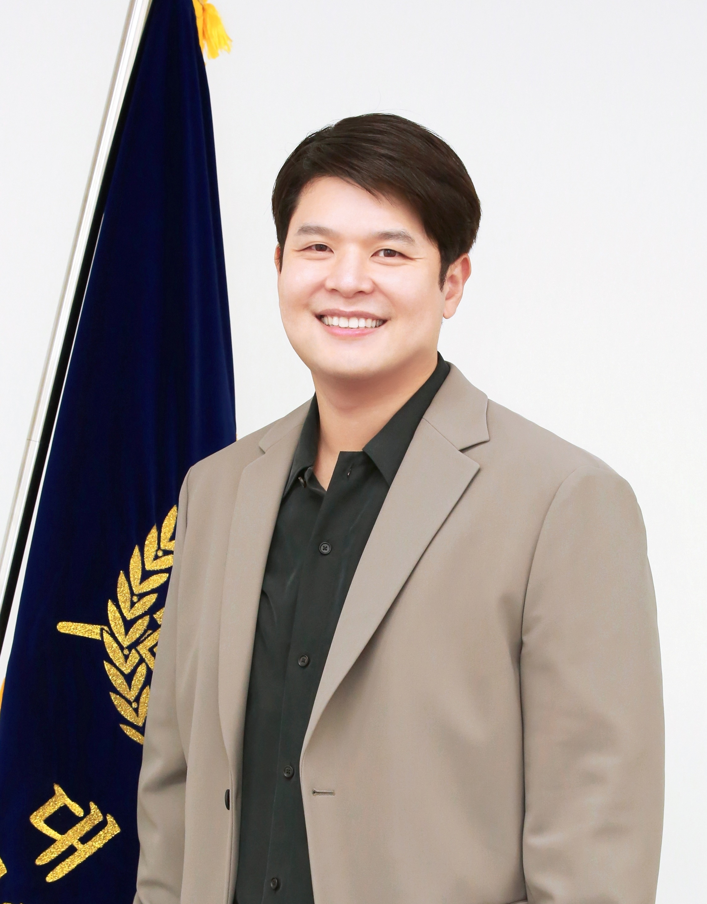

Home Research SKI-ML lab
|  |
Jay-Yoon Lee
Assistant Professor
Email : lee dot jayyoon @ snu dot ac.kr |
Research Interests
The goal of my research is injecting knowledge/constraints into neural models, primarily for natural language processing (NLP) tasks. I am broadly interested in structured prediction, multi-task learning, logical reasoning, and better representation learning for the aforementioned topics. Currently I am exploring these topics at Graduate School of Data Science (GSDS), Seoul National University (SNU), with SKI-ML lab members. Prior to joining SNU I was a postdoc associate at IESL with Professor Andrew McCallum and during my Ph.D. with my advisor Jaime Carbonell.News
- 09/20/24 4 papers accepted at EMNLP 2024 (3 EMNLP, 1 TACL)!
- 08/15/24 Our member (Jonghyun Song) presented a spotlight talk at the ACL Workshop on Representation Learning for NLP (Repl4NLP).
- 08/01/24 3 papers accepted at ACL 2024 workshop!
- 06/01/24 Our official lab homepage is now open! (SKI-ML Homepage Link)
- 04/01/24 5 interns have joined our lab.
- 01/01/24 3 interns have joined our lab.
- 12/10/23 Won the Best Area Chair award for the "Machine Learning for NLP track" at EMNLP 2023!
- 12/06/23 Our paper "Machine Reading Comprehension using Case-based Reasoning" got accepted at EMNLP 2023!
- 12/01/23 2 graduate students have joined our lab.
- 11/30/23 Our members (Jonghyun Song, Hyeryung Son, Mooho Song) won the first prize in the K-Datascience Hackathon!(Team SSSCI)
- 11/30/23 Presented “Exploring the limitations of ChatGPT” at the K-Datascience Conference and at the 2023 Future Research Information Forum hosted by KISTI & UNESCO. (youtube link (in Korean))
- 11/23/23 Presented “Injecting output constraints and dependencies into neural models” at the 2023 Korean Society of Artificial Intelligence Autumn Academic Conference.
- 11/17/23, 11/06/23-11/07/23 Presented “Automatically capturing label dependencies” at UMich CSE seminar (video) and at UIUC CSE seminar.
- 11/06/23 Our paper "Parameter-Efficient fine-tuning of InstructBLIP for Visual Reasoning Tasks" got accepted at NeurIPS 2023 workshop!
- 10/25/23 Visited HLR Lab of MSU CSE.
- 08/24/23 Delivered a keynote lecture at the 2023 Database Society Summer School.
- 06/01/23 1 intern has joined our lab.
- 06/01/23 6 graduate students have joined our lab.
- 05/03/23 Presented "Learnable loss function that automatically captures multivariate dependency" at AI frenz. (youtube link (in Korean))
- 05/03/23 Our paper "Learning from a Friend: Improving Event Extraction via Self-Training with Feedback from Abstract Meaning Representation" got accepted at ACL2023!
- 03/22/23, 04/12/23 Presented "Exploring the limitations of ChatGPT" at AI frenz (youtube link (in Korean))and at SNU Law forum (a.k.a. 서울대 법과 문화 포럼).
- 03/08/23 Presented "Exploring the limitations of ChatGPT" at SNU GSDS seminar. (video)
- 02/24/23 Presented "Automatically capturing label dependencies" at MSU CSE seminar.
- 12/01/22 1 intern has joined our lab.
- 12/01/22 4 graduate students have joined our lab.
- 12/01/22 Going to NeurIPS22 to represent our paper " Structured Energy network As a Loss (SEAL)".
- 06/01/22 1 graduate student has joined our lab.
Education
- Aug 2013 - June 2020, Ph.D. in Computer Science,
Computer Science Department, School of Computer Science, Carnegie Mellon University - Sep 2011 - May 2013, M.S. in Computer Science,
Language Technology Institute (LTI) & Lane Center for Computational Biology (LCCB), School of Computer Science, Carnegie Mellon University - Aug 2008, B.S. Summa Cum Laude in Electrical Engineering,
Department of Electrical Engineering and Computer Science, College of Information Science & Technology,
Korea Advanced Institute of Science and Technology (KAIST)
Work Experiences
- Sept 2022 – current, Assistant Professor at Graduate School of Data Science ,
Seoul National University, Seoul, South Korea - July 2020 – July 2022, Postdoctoral Associate under Professor Andrew McCallum,
University of Massachussets, Amherst, MA - Oct 2015 – July 2020, Research Assistant under Professor Jaime Carbonell,
Carnegie Mellon University, Pittsburgh, PA - June 2012 – Oct 2015, Research Assistant under Professor Christos Faloutsos,
Carnegie Mellon University, Pittsburgh, PA - Oct 2019 – Jan 2020, Research Intern, Language & Speech , Google AI, New York, NY
- June 2019 – Aug 2019, Research Intern, Deep Learning Group, Microsoft Research, Redmond, WA
- June 2017 – Aug 2017, Research Intern, Information and Data Sciences Group, MSR & Bing, Redmond, WA
- June 2016 – Aug 2016, Research Intern, IRML, Oracle Labs, Boston, MA
- May 2015 – Aug 2015, Research Intern, Yahoo! Labs, Sunnyvale, CA
- Sep 2009 – Jun 2011, Researcher, ZEROIN Corporation, Seoul, Korea
- Jul 2008 – Aug 2009, Associate, NICE Pricing Services, INC., Seoul, Korea
- Oct 2007 – Jan 2008, Intern, AMICUS Wireless Technology, Sunnyvale, CA
Teaching
- Spring 2024, Math and Statistics Foundations for Data Science
- Spring 2024, Special Topic: Consistency in AI Models and LLMs
- Fall 2023, Math and Statistics Foundations for Data Science
- Spring 2023, Math and Statistics Foundations for Data Science (link to course schedule)
- Fall 2022, NLP and its recent progress
- Spring 2015, 10-701 Introduction to Machine Learning Teaching Assistant for Professor Alex J. Smola
- Fall 2014, 15-826 Multimedia Databases and Data Mining Teaching Assistant for Professor Christos Faloutsos
Course Highlights at CMU
-
Deep Reinforcement Learning (10-703),
Deep Learning (10-707),
Statistical Machine Learning (10-702),
Convex Optimization (10-725),
Spectral Graph Theory (15-859N),
Intermediate Statistics (10-705),
Multimedia Databases and Data Mining (15-826)
[Project Report
, Presentation],
Advanced Probability Overview (36-752)
Responsibilities
-
Reviewer for ICML (2019-2023), NeurIPS (2019-2023, Area chiar 2023), ICLR (2021-2023), ACL (2019-2023),
and EMNLP (2022, Area chiar 2023).
Awards and Honors
- Mar 2003 – Feb 2008, Scholarship in Science & Technology, Korea Student Foundation
- Mar 2005 – Feb 2008, Scholarship in Mathematics, Korea Foundation for Advanced Studies
- Aug 2002, Prize of encouragement at the 5th Nationwide High School Mathematics Competition, Korea University
Other Experiences
- June 2016, top team with $5k prize, , Qualcomm NeuroHackathon, Carnegie Mellon University, PA
- Aug 2016, Best Presenter $3k prize, Global Top Talent Forum, Hyundai Motor Group, San Diego, CA